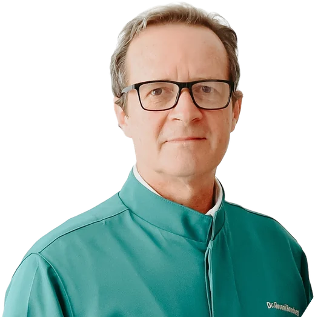

Ronco e apneia: o aparelho feito sob medida.
Ronco não é normal. Na Clínica Tasca Ronchetti, o Dr. Giovani Ronchetti avalia o seu caso e faz o aparelho intraoral que ajuda o ar a passar durante o sono.


Da consulta ao aparelho, em três passos.
Cada aparelho é feito para a sua arcada e ajustado com o tempo, nas consultas de acompanhamento.
- 01
Avaliação
Na consulta, o dentista conversa sobre o seu sono e examina a boca e a mordida.
- 02
Aparelho sob medida
Feito para a sua arcada. Durante o sono, ele posiciona a mandíbula levemente para frente, e o ar passa com mais facilidade.
- 03
Ajustes
A adaptação costuma ser rápida. Os ajustes são feitos nas consultas de acompanhamento.
O que mais perguntam sobre ronco e apneia.
Respostas gerais. Quem avalia o seu caso é o dentista, na consulta.
Perguntar pelo WhatsAppTodo ronco é apneia?
Não. Muita gente ronca sem parar de respirar. Mas ronco alto e quase todas as noites, pausas na respiração que alguém percebe e cansaço durante o dia são sinais que valem uma avaliação.
Quem faz o diagnóstico da apneia?
O diagnóstico da apneia é médico, feito com um exame do sono, a polissonografia. O dentista trabalha junto com o médico: avalia a boca e a mordida e faz o aparelho quando ele é indicado.
Para quem o aparelho é indicado?
Em geral, para o ronco e para a apneia leve a moderada. Na apneia grave, ele pode ser uma alternativa para quem não se adapta ao CPAP, sempre com o acompanhamento do médico. Quem define se é o seu caso é a avaliação.
Como o aparelho funciona?
Ele é feito sob medida para a sua arcada. Durante o sono, posiciona a mandíbula levemente para frente. A via aérea fica mais aberta e o ar passa com mais facilidade.
O aparelho incomoda?
Nos primeiros dias, é comum sentir mais saliva ou os dentes e a mandíbula diferentes ao acordar. A adaptação costuma ser rápida, e os ajustes são feitos nas consultas de acompanhamento.
Quanto custa?
Depende de cada caso: do tipo de aparelho e do acompanhamento. O valor é passado depois da avaliação. Para saber como funciona a primeira consulta, fale com a clínica pelo WhatsApp.
Ranger os dentes dormindo tem tratamento?
O bruxismo do sono pode desgastar os dentes e causar dor na mandíbula ao acordar. A placa para bruxismo, feita sob medida, protege os dentes durante a noite. É um aparelho diferente do usado para o ronco.

Dr. Giovani Ronchetti
Cirurgião-dentista · ronco, apneia e bruxismo · CRO/RS 11807
Divide a clínica com a irmã, a Dra. Maria Regina Ronchetti (CRO/RS 6830), desde 2010. Nas avaliações dos pacientes, o que mais aparece é o jeito de explicar cada etapa.
Ler as avaliações no Google ↗Vamos conversar sobre o seu sono?
Sala 1003 do Centro Empresarial Jardim do Lago, R. Liberdade, 33, Canoas. Segunda a sexta, das 8h às 12h e das 14h às 18h. Sábado, das 8h às 12h.